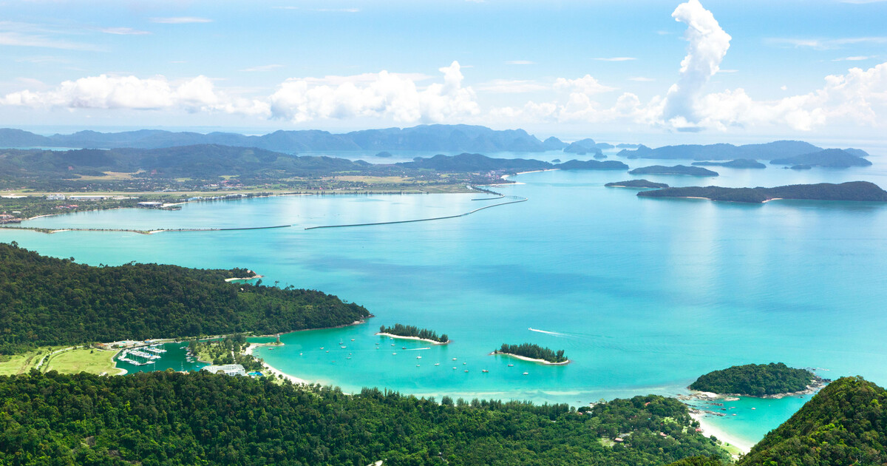
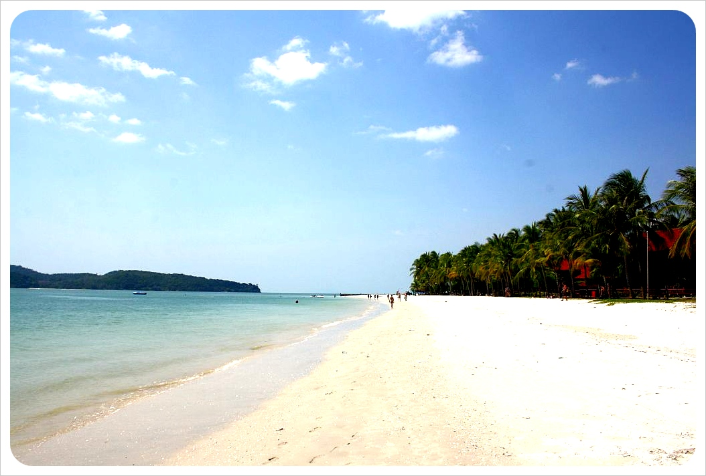
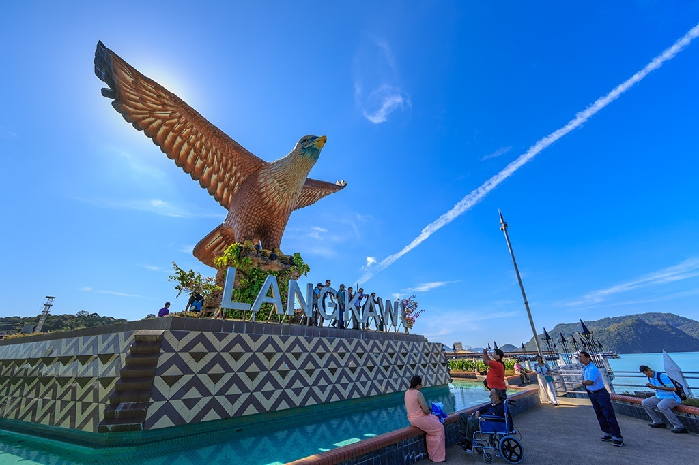

  
The state of Kedah spans approximately 9, 425 sq. km in the northern part of the Peninsular and together with Perlis, Perak and Kelantan, shares a common border with neighboring Thailand. It has the distinction of being the "Rice bowl of Malaysia", the Kedah-Perlis rice plains produce more than half of the country's home grown rice supply. Alor Setar, the state capital, is the seat of Government and the business centre of the state.
Beautiful island and beaches: